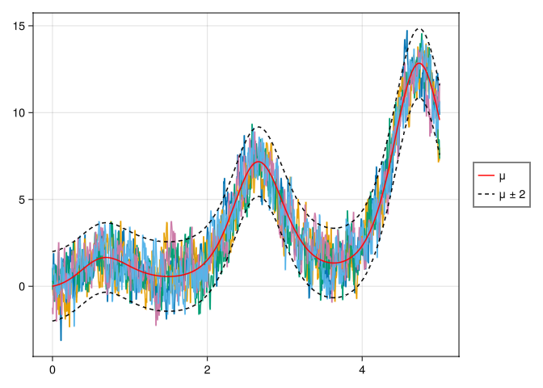
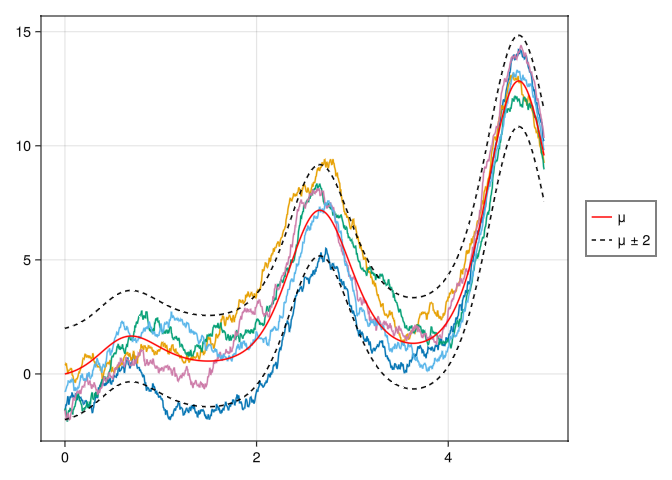
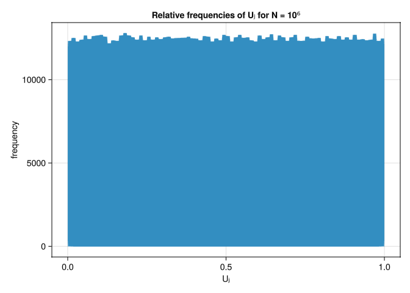
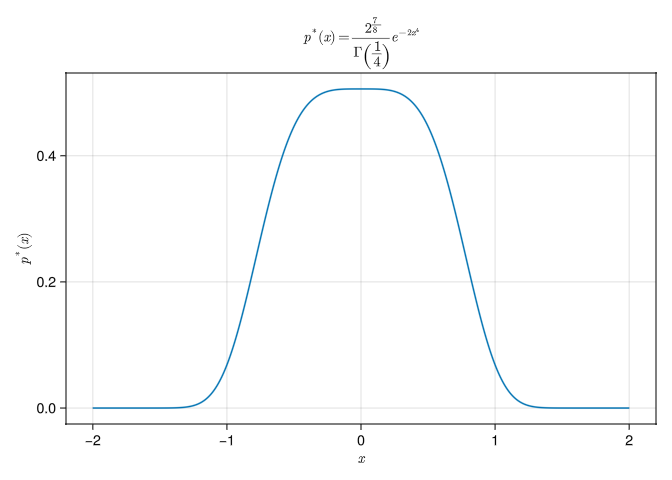
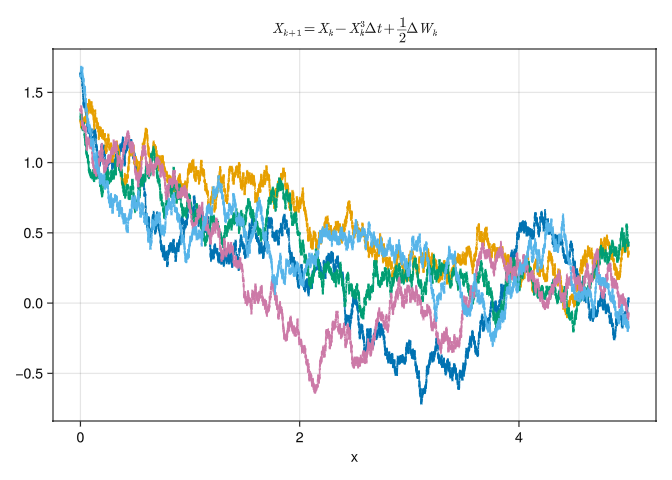

![]()
using GLMakie
using Distributions
using LinearAlgebra
using KernelDensity
using SpecialFunctions
function makefig1(τ::Float64)
t = LinRange(0.0, 5.0, 1000)
μ(t) = t*exp(sin(3*t))
cov(t, s) = exp((-abs(t-s)) / (τ))
μs = μ.(t)
Σ = Matrix{Float64}(undef, length(t), length(t))
for idx in CartesianIndices(Σ)
Σ[idx] = cov(t[idx.I[1]], t[idx.I[2]])
end
A = cholesky(Σ).L
fig = Figure()
ax = Axis(fig[1, 1])
for i in 1:5
Xi = μs .+ A*randn(length(t))
lines!(t, Xi)
end
lines!(ax, t, μs, color = :red, label = "μ")
lines!(ax, t, (μs .+ 2),
color = :black,
linestyle = :dash)
lines!(ax, t, (μs .+ -2),
color = :black,
linestyle = :dash,
label = "μ ± 2")
Legend(fig[1, 2], ax)
save("question1c_$τ.png", fig)
end
makefig1(0.02);
makefig1(1.0);Homework 3
Question 1
Consider a Gaussian random process \(X(t;\omega)\) defined on the time interval [0, 5]. The process has mean \[\mu(t) = t e^{\sin{(3t)}}\] and covariance function \[cov(t, s) = e^{\frac{-|t-s|}{\tau}}\] where \(\tau > 0\) represents the temporal “correlation length” of the Gaussian process.
Part A
Compute the standard deviation of \(X(t;\omega)\) at time \(t\).
Solution
Notice that when \(t = s\), the covariance is 1 because we have \(e^0\). The variance of the random variable \(X(t;\omega)\) at any particular time \(t\) is equal to the Covariance of \(t\) with itself. Since the standard deviation is just the square root of the variance we can easily show that:
\[\begin{align} \sigma(t) = \sqrt{Var(X(t;\omega))} = \sqrt{Cov(t, t)} = \sqrt{e^{\frac{-|t - t|}{\tau}}} = \sqrt{e^0} = 1 \end{align}\]
Part B
Compute the covariance matrix of the random variables \(X(1;\omega)\) and \(X(2;\omega)\) as a function of \(\tau\). What happens when \(\tau \rightarrow 0\)?
Solution
Therefore, the covariance is always 1 along the diagonal elements of the covariance matrix \(\Sigma\). Additionally, the off-diagonal elements are equal because we are taking the difference between the absolute values of \(t\) and \(s\). Thus, the matrix is symmetric.
\[\begin{align} \Sigma_X(\tau) = \left[ \begin{matrix} 1.0 & e^{\frac{-|1-2|}{\tau}} \\ e^{\frac{-|2-1|}{\tau}} & 1.0 \end{matrix}\right] \end{align}\]
For \(\Sigma(\tau \rightarrow 0) \rightarrow \mathbf{I}\) where \(\mathbf{I}\) is the identity matrix.
\[\begin{align} \lim_{\tau \rightarrow \infty} \Sigma_X(\tau) = \left[\begin{matrix} 1 & 0 \\ 0 & 1 \end{matrix}\right] = \mathbf{I} \end{align}\]
Part C
Plot a few samples of \(X(t;\omega)\) for \(\tau = 0.02\) and \(\tau = 1\) on a temporal with \(5000\) points in [0, 5] (two different figures). Show that such sample paths are approximately within \(\mu(t) \pm 2\sigma(t)\), where \(\sigma(t)\) is the standard deviation of the process.
Solution
First, we define a 1D grid for time from 0 to 5, equally spaced with 5000 points. We then define the functions for the mean and covariance and construct a vector of means corresponding to each point in time. Next, we construct a covariance matrix, perform the lower triangular Cholesky factorization of that matrix, and generate a random vector. \[\bar{X_i} = \bar{\mu}_i + \bar{A}\bar{\xi}\] where \(\xi \sim \mathcal{N}(0, 1)\)


Question 2
Show that the sequence of numbers \(\{U_k\}\) defined as
\[U_k = \frac{(\hat{X}_k - \hat{Y}_k) \quad \mod m_1}{m_1 + 1}\] where \[\begin{align}\hat{X}_k = \begin{cases} X_k & \text{if} \quad X_k \geq 0 \\ X_k - m_1 X_k & \text{if} \quad X_k < 0 \end{cases} & \quad \hat{Y}_k = \begin{cases} Y_k & \text{if} \quad Y_k \geq 0 \\ Y_k - m_2 Y_k & \text{if} \quad Y_k < 0 \end{cases} \end{align}\]
\[\begin{align} X_k = (1403580X_{k-2} - 810728X_{k-3}) \quad \mod m_1 \\ Y_k = (527612Y_{k-1} - 1370589Y_{k-3}) \quad \mod m_2 \end{align}\]
Let \(m_1 = 2^{32} - 209\), \(m_2 = 2^{32} - 22853\), and \[X_{-3} = X_{-2} = X_{-1} = Y_{-3} = Y_{-2} = Y_{-1} = 111\] is approximately uniformly distributed in [0, 1]. To this end, generate \(N = 10^6\) numbers \(U_j\) where \(j = 1, 2, ..., N\) and plot the histogram of relative frquencies approximateing the PDF in [0, 1].
Solution
Code that produces a vector of Float64 values of length \(N\) from the seed \(111\). We use the modulo function included in Julia Base.
function MRG32k3a(seed::Integer, N::Integer)
m₁ = 2.0^32 - 209
m₂ = 2.0^32 - 22853
X = Vector{Float64}(undef, N+3)
Y = Vector{Float64}(undef, N+3)
for i = 1:3
X[i] = Float64(seed)
Y[i] = Float64(seed)
end
for j in 1:length(X) - 3
X[j+3] = mod(1403580*X[j+1] - 810728*X[j], m₁)
Y[j+3] = mod(527642*Y[j+2] - 1370589*Y[j], m₂)
end
transformX(Xk::Float64) = Xk ≥ 0 ? Xk : Xk - m₁*Xk
transformY(Yk::Float64) = Yk ≥ 0 ? Yk : Yk - m₂*Yk
Xhat = transformX.(X)
Yhat = transformY.(Y)
Uk = Vector{Float64}(undef, N)
for i in eachindex(Xhat)
if i > length(Xhat) - 3
break
end
Uk[i] = mod(Xhat[i+3] - Yhat[i+3], m₁) / (m₁ + 1)
end
Uk
end
function question2()
fig = Figure()
ax = Axis(fig[1, 1],
title = "Relative frequencies of Uⱼ for N = 10⁶",
xlabel = "Uⱼ",
ylabel = "frequency"
)
hist!(ax, MRG32k3a(111, 1000000), bins = 80)
save("question2.png", fig)
end
question2();

Question 3
Consider the stochastic differential equation (SDE)
\[dX(t;\omega) = -X(t;\omega)^3 dt + \frac{1}{2} dW(t;\omega) \quad X(0;\omega) = X_0(\omega) \tag{1}\]
where \(W(t;\omega)\) is a Wiener process, and \(X_0(\omega)\) is a uniformly distributed random variable in [1, 2]. Let us discretize (Equation 1) with the Euler-Maruyama scheme,
\[X_{k+1} = X_k - X_k^3 \Delta t + \frac{1}{2} \Delta W_k \tag{2}\]
where \(X_k = X(t_k;\omega)\), \(\Delta t = t_{k+1} - t_k\) and \(\{\Delta W_k\}\) are i.i.d. Gaussian random variables with zero mean and variance \(\Delta t\).
Part A
Write the Fokker-Planck (FKP) equation corresponding to the SDE ().
Solution
From course notes 3, we know that the Fokker-Planck equation to the general SDE
\[\begin{align} dX_t = m(X_t, t)dt + s(X_t, t)dW_t \quad X(0) = X_0 \end{align}\]
is
\[\begin{align} \frac{\partial p(x, t)}{\partial t} + \frac{\partial}{\partial x} \left[m(x, t)p(x, t)\right] = \frac{1}{2} \frac{\partial^2}{\partial x^2} \left[s(x, t)^2p(x, t)\right] \end{align}\]
for equation (Equation 1) we can see the \(m(x, t) = -X_t^3\) and \(s(x, t) = \frac{1}{2}\), thus the Fokker-Plank equation for (Equation 1) is
\[\begin{align} \frac{\partial p}{\partial t} + \frac{\partial}{\partial x} \left[-x^3 p(x, t)\right] = \frac{1}{8} \frac{\partial^2p}{\partial x^2} \end{align}\]
Part B
Using the FKP equation show that there exists a statistically stationary solution and compute the PDF \(p^*(x)\) of such a stationary solution analytically. Is the equilibrium distribution \(p^*(x)\) Gaussian?
Hint: To compute a stationary solution to the Fokker-Planck equation, set the time derivative \(\frac{\partial p}{\partial t} = 0\).
Solution
We are left to solve the following DE:
\[\begin{align} \frac{\partial}{\partial x} \left( x^3 p + \frac{1}{8} \frac{\partial p}{\partial x}\right) &= 0 \\ x^3 p + \frac{1}{8} \frac{\partial p}{\partial x} &= 0 \\ 8 \int x^3 dx &= - \int \frac{1}{p} dp\\ 2x^4 &= -\ln{p} + k\\ p(x) &= ke^{-2x^4} \end{align}\]
We need to find a scaling constant \(k\) for the pdf \(p(x, t)\) such that when you integrate from \([-\infty, \infty]\) you get \(1\).
\[\begin{align} k\int_{-\infty}^{\infty} e^{-2x^4}dx &= 1 \end{align}\]
Notice the function is even and thus we can write the integral as such:
\[\begin{align} 2k\int_{0}^{\infty} e^{-2x^4}dx &= 1 \quad \begin{cases} u &= x^4 \rightarrow u^{-\frac{3}{4}} = x^{-3}\\ \frac{du}{dx} &= 4x^3 \\ \frac{1}{4}u^{-\frac{3}{4}}du &= dx\end{cases} \\ \frac{K}{2} \int_0^{\infty} e^{-2u}u^{\frac{1}{4} -1} du &= 1 \quad \begin{cases}\xi &= 2u \\ \frac{d\xi}{2} &= du\end{cases} \\ \frac{K}{4} \int_0^{\infty} e^{-\xi} \left(\frac{\xi}{2}\right)^{-\frac{3}{4}} d\xi &= 1\\ \frac{2^{\frac{3}{4}}K}{4} \int_0^{\infty} e^{-\xi} \xi^{\frac{1}{4} - 1} d\xi \end{align}\]
The Gamma function is \[\Gamma(z) = \int_0^{\infty} e^{-\xi}\xi^{z-1}d\xi\]
Solving for \(K\) we have \[\begin{align} K\frac{\Gamma\left(\frac{1}{4}\right)}{2\sqrt[4]{2}} &= 1\\ K &= \frac{2\sqrt[4]{2}}{\Gamma\left(\frac{1}{4}\right)} \end{align}\]
The PDF \(p^*(x)\) is thus,
\[p^*(x) = \frac{2\sqrt[4]{2}}{\Gamma\left(\frac{1}{4}\right)}e^{-2x^4}\]
p(x) = (2^(7/8) / gamma(1/4)) * exp(-2*x^4)
function question3c()
x = LinRange(-2, 2, 1000)
fig = Figure()
ax = Axis(fig[1, 1],
title = L"$p^*(x)=\frac{2^{\frac{7}{8}}}{\Gamma\left(\frac{1}{4}\right)}e^{-2x^4}$",
xlabel = L"$x$",
ylabel = L"$p^*(x)$")
lines!(ax, x, p.(x))
save("question3c.png", fig)
end
question3c();

We can see that the pdf is non-gaussian. A gaussian distribution is of the form \(f(x) = e^{-x^2}\).
Part C
Write the conditional transition density \(p(x_{k+1}|x_k)\) defined by discrete Markov process (Equation 2). Does the functional form of the transition density depend on the particular time \(t_k\)? Or is it the same for all times?
Solution
We know that the Wiener process is a gaussian random variable with zero mean and variance \(\Delta t\). For equation (Equation 2) we have \(Var(\frac{1}{2} \Delta W_k) = \frac{1}{4}\Delta t\).
By the property that the sum of a constant and a gaussian random variable is still a gaussian with a shifted mean, we can see that if the current state \(X_k = x\), the next state \(X_{k+1}\) is
\[\begin{align} X_{k+1} = x - x^3 \Delta t + \frac{1}{2} \Delta W_k \end{align}\]
Thus
\[\begin{align} X_{k+1} | X_k = x \sim \mathcal{N}(x-x^3 \Delta t, \frac{1}{4} \Delta t) \end{align}\]
From this we can explicitly write out the conditional transition density \(p(x_{k+1} | x_k)\). Let \(X_{k+1} = y\) and \(X_k = x\)
\[\begin{align} p(y | x) = \frac{2}{\sqrt{2 \pi \Delta t}}e^{-\frac{2(y - x + x^3 \Delta t)^2}{\Delta t}} \end{align}\]
The functional form of the transition density only depends on \(\Delta t\), which is constant for all time.
Part D
By using numerical integration show that the PDF \(p^*(x)\) of the statistical steady state you computed in part b is a solution to the fixed point problem
\[p^*(x) = \int_{-\infty}^{\infty} p(x|y)p^*(y)dy \tag{3}\]
where \(p(x|y)\) is the transition density you computed in part c. Given that \(p^*(y)\) decays quite fast, for numerical purposes it is sufficient to approximate the infinite domain of the integral (Equation 3) to [-5, 5].
Solution
Part E
Plot a few sample paths of the SDE for \(\Delta = 10^{-4}\) for \(t \in [0, 5]\).
Solution
function question3partE()
Δt = 1e-4
ts = 0.0:Δt:5.0
N = 5
W = Normal(0, sqrt(Δt))
procs = Matrix{Float64}(undef, length(ts), N)
for i in 1:N
procs[1, i] = rand() + 1.0
end
for i in 1:N
for j in 2:length(ts)
procs[j, i] = procs[j-1, i] - (procs[j-1, i]^3)*Δt + 0.5*rand(W)
end
end
fig = Figure()
ax = Axis(fig[1, 1],
title = L"$X_{k+1} = X_k - X_k^3 \Delta t + \frac{1}{2} \Delta W_k$",
xlabel = "x")
for i in 1:N
lines!(ax, ts, procs[:, i])
end
save("question3e.png", fig)
end
question3partE();

Part F
By computing a sufficiently large number of sample paths, Estimate the PDF of \(X(t;\omega)\) numerically (e.g. by using a kernel density PDF estimator or method of relative frequencies) at different times and show that it converges to the steady state PDF you computed in part b.
Solution
function question3partF()
Δt = 1e-4
ts = 0.0:Δt:5.0
N = 200
W = Normal(0, sqrt(Δt))
procs = Matrix{Float64}(undef, length(ts), N)
println("initializing matrix with uniform random numbers in [1, 2]")
for i in 1:N
procs[1, i] = rand() + 1.0
end
println("simulating random process")
for i in 1:N
println("$N complete")
for j in 2:length(ts)
procs[j, i] = procs[j-1, i] - (procs[j-1, i]^3)*Δt + 0.5*rand(W)
end
end
fig = Figure();display(fig)
ax1 = Axis(fig[1, 1],
title = "$N SDE paths")
ax2 = Axis(fig[1, 2],
title = "KDE Density")
x = LinRange(-5, 5, 1000)
xlims!(ax2, -5, 5)
for i in 1:N
lines!(ax1, ts, procs[:, i], linewidth = 1)
end
d = kde(procs[1, :])
vlinet = Observable(ts[1])
kde_data = Observable((d.x, d.density))
kde_line = lines!(ax2, [0.0], [0.0], color = :blue, label = "KDE")
kde_plot = lift(kde_data) do (x, density)
kde_line[1] = x
kde_line[2] = density
end
vlines!(ax1, vlinet, color = :red, label = "time")
lines!(ax2, x, p.(x), color = :red, linestyle = :dash, label = L"$p^*(x)$")
Legend(fig[2, 1], ax1, orientation = :horizontal)
Legend(fig[2, 2], ax2, orientation = :horizontal)
println("starting video rendering...")
record(fig, "question3partF.mp4", 2:100:length(ts); framerate = 30) do k
println("frame $k")
vlinet[] = ts[k]
d = kde(procs[k, :])
kde_data[] = (d.x, d.density)
end
end
question3partF()